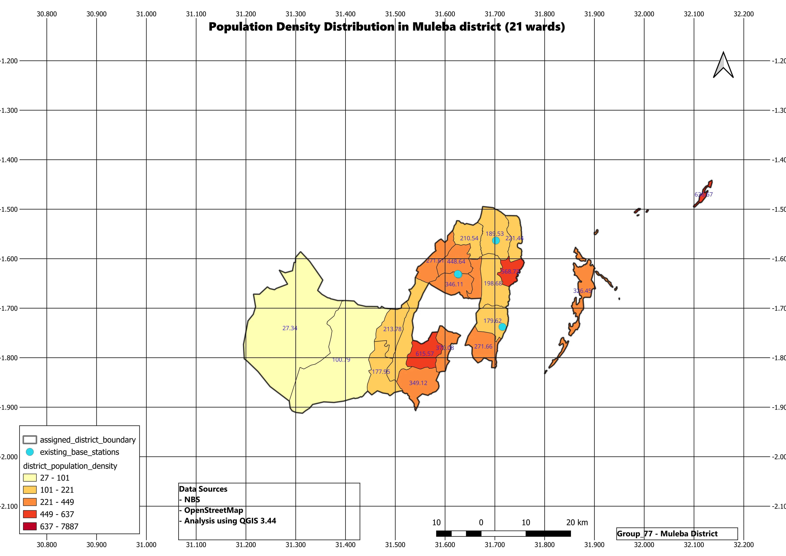
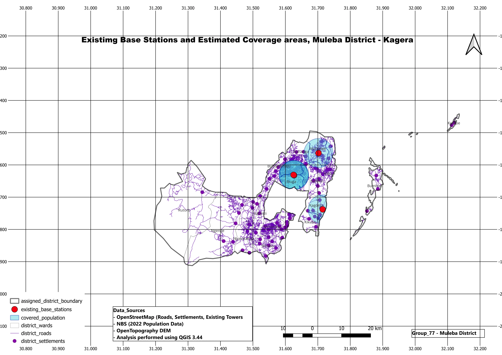
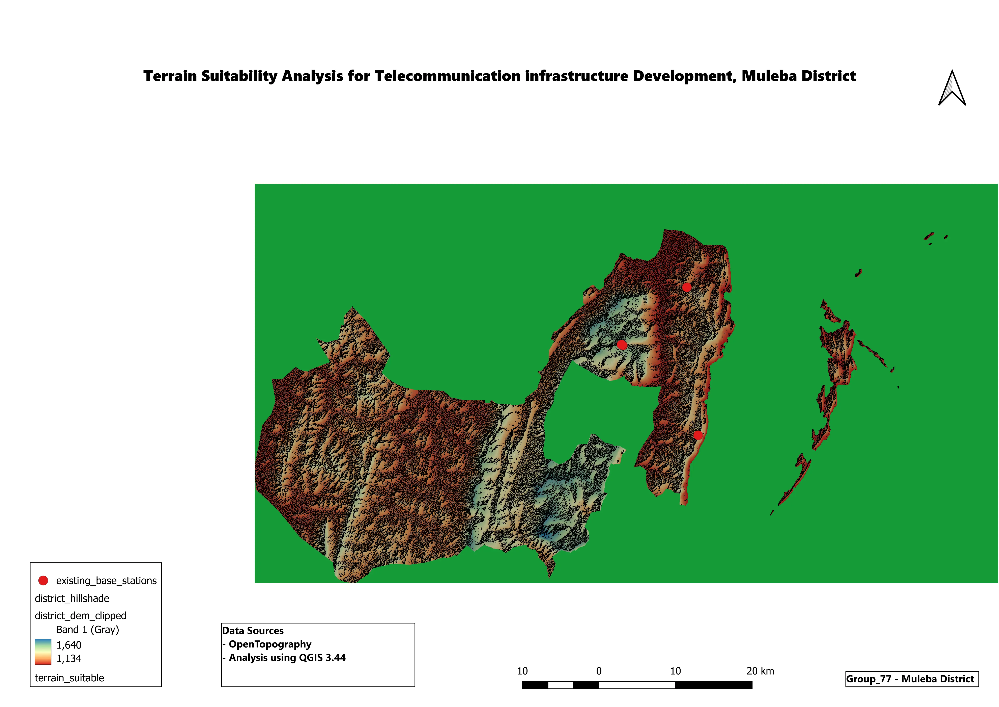
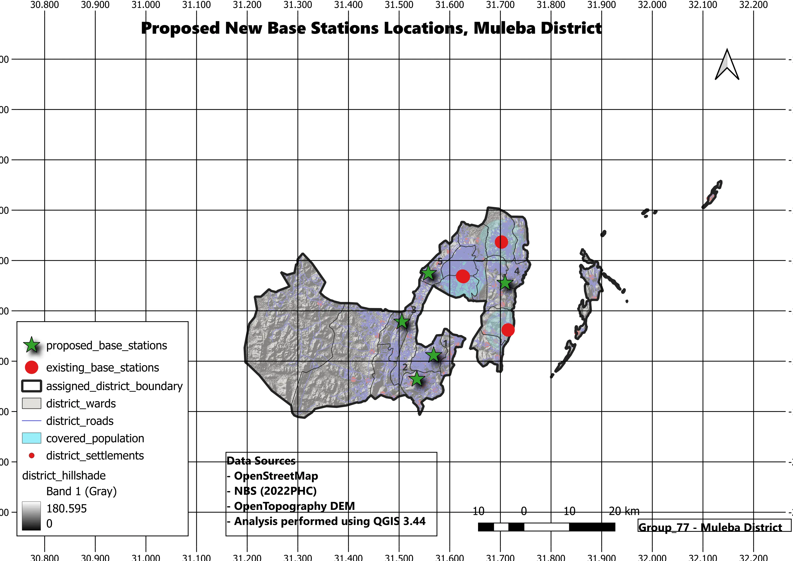

Telecom Infrastructure Site Selection
A geospatial analysis project developed to identify the most suitable locations for telecommunication base stations using Geographic Information Systems (GIS), spatial analysis, and location intelligence to support infrastructure planning and network expansion.





Project Overview
Selecting the right location for telecommunication infrastructure is one of the most critical decisions in network planning. Poor site selection can lead to limited service coverage, increased deployment costs, and inefficient resource utilization.
MLUE Technology conducted a location intelligence study using Geographic Information Systems (GIS) to evaluate suitable areas for telecommunication base station deployment. By combining multiple spatial datasets and analytical techniques, the project demonstrates how geospatial technology can support informed infrastructure investment decisions.
The Business Challenge
Telecommunication providers must carefully determine where to deploy new network infrastructure to maximize coverage while minimizing operational and investment costs. Without spatial analysis, organizations may face challenges such as:
- Poor network coverage
- High infrastructure deployment costs
- Overlapping service areas
- Under-served communities
- Inefficient resource allocation
- Limited visibility into geographic factors affecting expansion
Making these decisions without location intelligence increases both financial and operational risk.
Our Solution
MLUE Technology applied geospatial analysis techniques to identify suitable locations for telecommunication infrastructure. The project integrated multiple spatial datasets to evaluate potential deployment areas. Through spatial modelling and suitability analysis, decision-makers can better understand where future network investments are likely to deliver the greatest value.
Core Components
Data Used
Integrated datasets including Administrative Boundaries, Population Distribution, Road Networks, Land Use & Land Cover, DEM, and Existing Infrastructure.
Spatial Analysis Methodology
Utilized Spatial Data Processing, Buffer & Overlay Analysis, Suitability Modeling, Spatial Querying, and Geographic Visualization.
Key Deliverables
Produced Suitability Maps, Infrastructure Planning Maps, Coverage Analysis, Decision Support Maps, and Geographic Reports.
Technologies Used
Advanced geospatial tools and methodologies were utilized to process and analyze complex spatial data.
Business Impact
The proposed geospatial approach helps organizations mitigate risks and make data-driven decisions:
- Improve infrastructure planning
- Reduce investment risk
- Support strategic expansion decisions
- Identify high-potential deployment areas
- Improve network coverage planning
- Enhance location-based decision making
- Optimize resource allocation
Why Location Intelligence Matters
Modern organizations generate large amounts of business and geographic data, yet many decisions are still made without considering location. Location Intelligence transforms geographic data into actionable insights that support Business Expansion Planning, Infrastructure Development, Market Analysis, Resource Allocation, Risk Assessment, and Strategic Decision-Making.
Transform Geographic Data into Business Intelligence
Whether you're planning infrastructure, evaluating new investment locations, analysing markets, or supporting strategic expansion, MLUE Technology delivers geospatial solutions that turn location data into meaningful business insights. Let's build smarter decisions through Location Intelligence.
Contact MLUE Technology